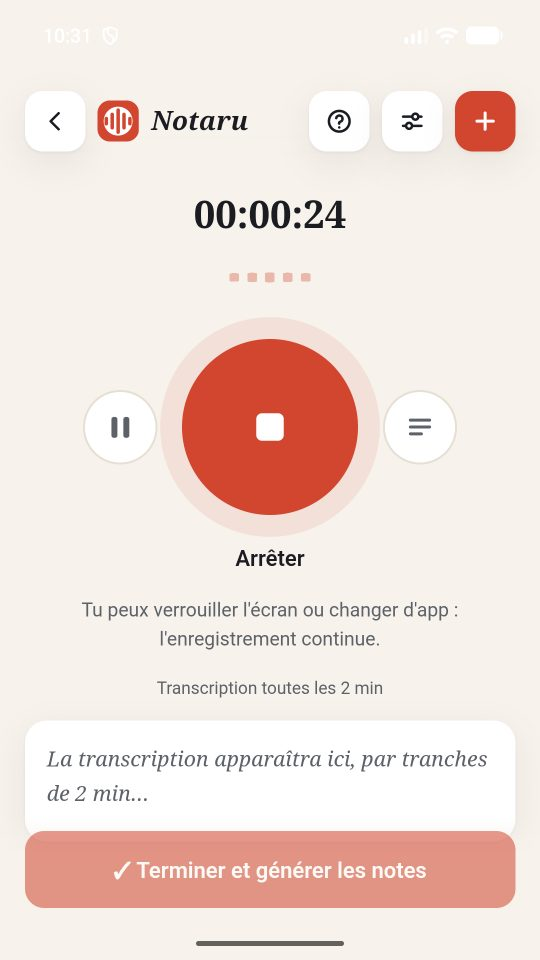
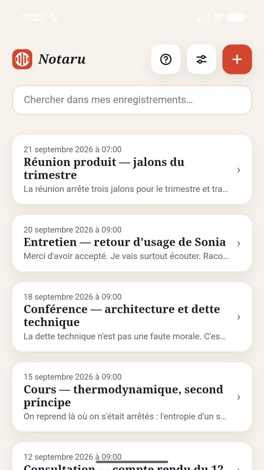
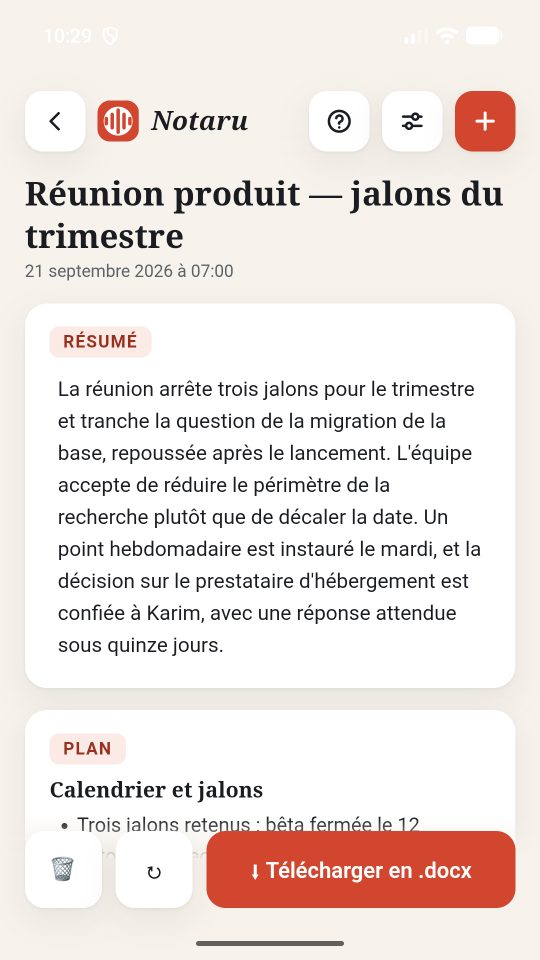
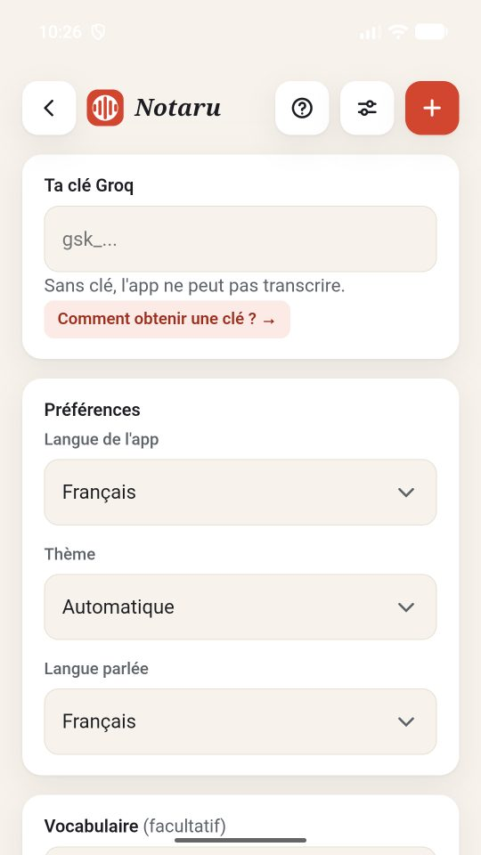

Notaru
Tu poses ton téléphone, tu écoutes. Notaru prend les notes.
Notaru enregistre ce qui se dit autour de toi, le transcrit au fil de l’eau, et en tire des notes structurées : un résumé, un plan, les définitions des termes employés et les points à retenir. Le tout s’exporte en fichier Word.
Un cours magistral, une réunion d’équipe, un entretien, une conférence, une consultation, une soutenance : tout ce qui se parle et mérite d’être relu.

Ce que tu récupères
- Une transcription qui s’affiche pendant l’enregistrement, par tranches
- Un résumé de l’ensemble, pas seulement du début
- Un plan qui suit le déroulé réel de ce qui a été dit
- Les définitions des termes techniques employés
- Les points importants, rassemblés
- Un fichier .docx propre, cherchable, partageable
L’enregistrement ne s’arrête pas
C’est la raison d’être de l’application. Tu peux verrouiller l’écran, ranger le téléphone dans ta poche, ouvrir une autre application : l’enregistrement continue. Une notification reste affichée pendant toute la durée — c’est elle qui empêche Android de couper le micro.
Tes données restent chez toi
Notaru n’a ni compte, ni serveur, ni traceur. Tes enregistrements, tes notes et ta clé restent sur ton téléphone. Seul l’audio part vers le service de transcription que tu configures, puis le texte pour en rédiger les notes. Pas de publicité, pas de mesure d’audience.
Il te faut une clé
Notaru ne vend pas d’abonnement et ne prend pas de commission : la transcription passe par ton propre compte, avec ta propre clé. Groq en fournit une gratuitement, en trente secondes, sans carte bancaire. L’app t’explique la marche à suivre, étape par étape.
Trois langues
Interface en français, anglais et arabe, avec un affichage de droite à gauche complet pour l’arabe.
Un aperçu

Tes enregistrements L’enregistrement continue, écran verrouillé 
Des notes structurées, modifiables 
Ta clé et tes réglages
Application réservée aux personnes de 18 ans et plus, les services de transcription exigeant cet âge pour ouvrir un compte.